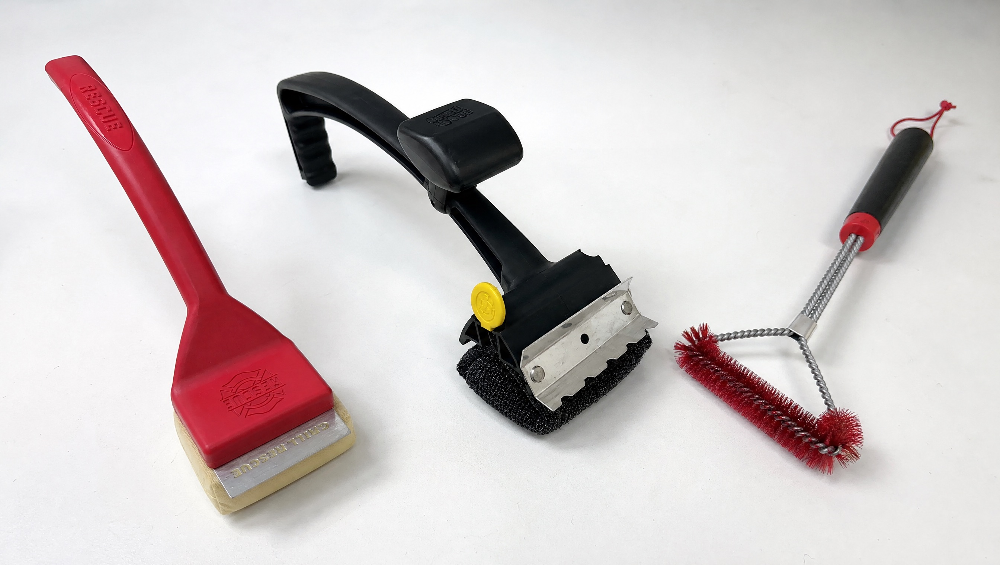
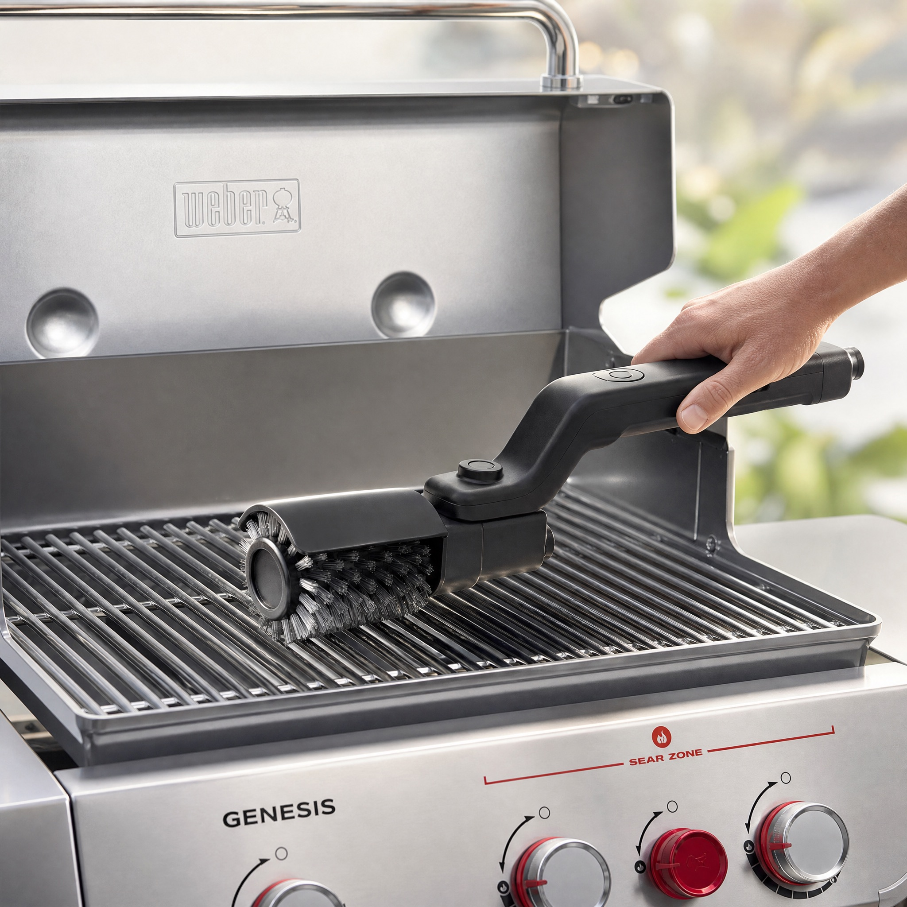
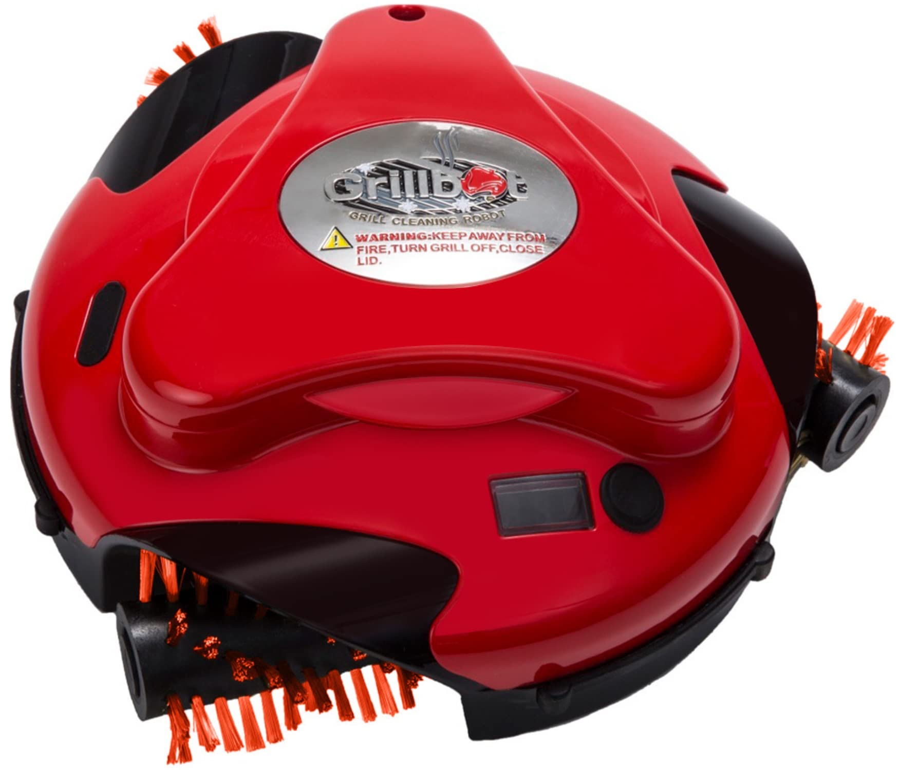
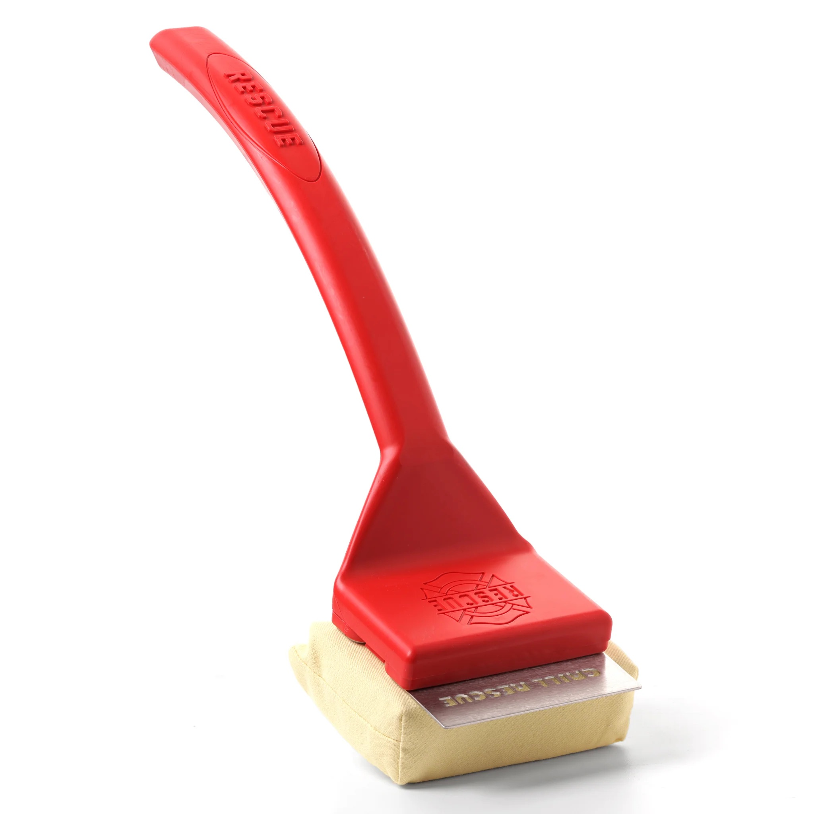
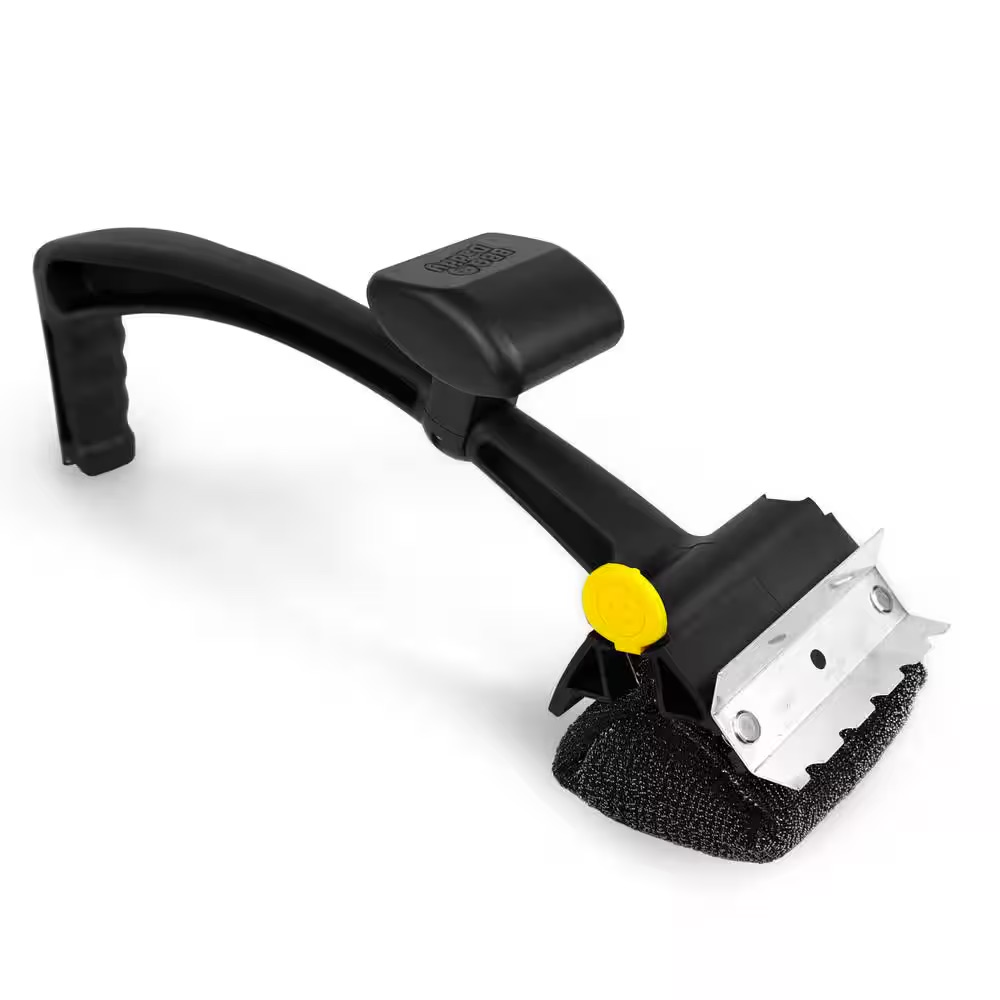
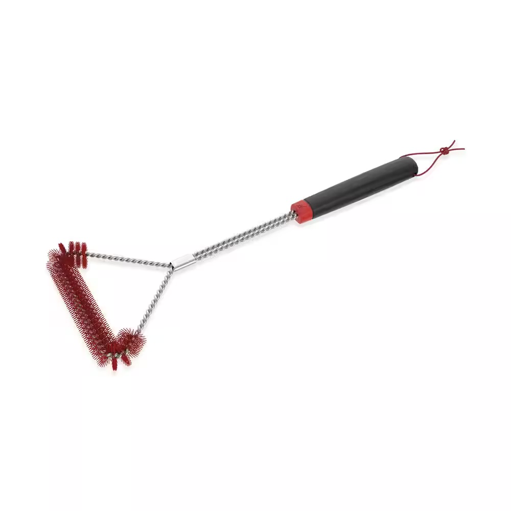
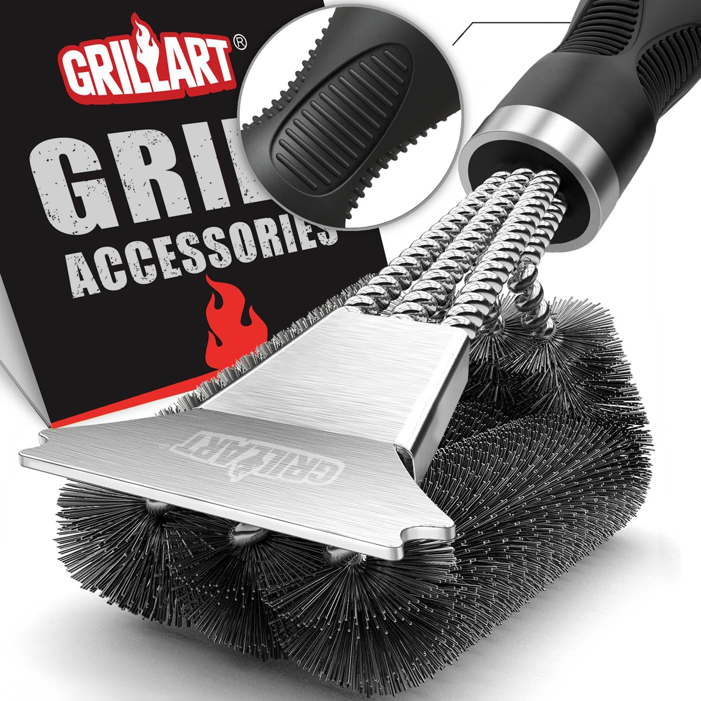

We Tested 12 Grill Brushes Over 6 Weeks. Only One Got Used Past Week 3.

If you've landed here, I already know two things about you.
You've bought a grill brush before. Maybe two or three. The first one was supposed to last forever. By the third cookout the bristles were already bending sideways and the rivet that holds the head to the handle was starting to wiggle. The second one was the bristle-free safe alternative everyone told you to switch to. It cost twice as much and didn't actually clean. The third one came with a water bucket and a five-step ritual that turned a quick post-cookout job into a science experiment.
So now there's a balled-up piece of aluminum foil sitting on top of your grill cover, and that does most of the cleaning you actually do.
I've been there. I've been there for twenty-two years of grilling, through every brush type the category has tried to sell me, and somewhere around brush number eight I stopped expecting the next one to be the one that fixed it.
Here's what the category isn't telling you. The bristle is not the problem. Wire vs nylon vs coil vs steam vs aramid foam. The whole industry has been arguing about what to make the cleaning surface out of for two decades. The argument has produced almost nothing on the actual question, which is whether you'll bother to clean your grill at all.
You won't, most of the time, because cleaning a hot grate after a four-hour cook is a job nobody wants. The brush you own assumes you'll do it anyway. Convenience, not bristle material, is the variable that decides whether your grill stays clean. And until very recently, nothing in this category was solving for it.
So this spring I tested twelve grill brushes across six weeks on four grills (a Weber Genesis II, a Traeger Pro 780, a Big Green Egg Large, and a Blackstone 36" griddle). Six made the final cut. The other six were either obviously broken on arrival, structurally identical to a brush already in the test, or so bad on the first cookout that keeping them in rotation would have wasted my time.
This article is the result. One of them is the only product I've tested in twenty-two years that I kept reaching for past week three. The other five all have moments. None of them solve the problem the category was supposed to solve.
What I Tested For
Before diving into rankings, here's how I evaluated each brush. These aren't spec-sheet numbers. They're the factors that decide whether a brush is still in your rotation a year from now, or sitting in the garage with a melted bristle next to it.
🔥 Cleaning Power
How well does it actually pull baked-on grease and carbonized residue off a real-world dirty grate. Not a marketing-photo grate. The grate that looks like it does after three cookouts you forgot to clean.
💪 Effort Required
How hard you have to push, scrub, and lean. I weighed downward force during a standardized scrub session and tracked how my arm felt twenty minutes after each clean.
⏱️ Time Per Clean
Stopwatch on a representative dirty grate. Setup time included (water bucket, charging, head swap, cooldown). The clock starts when you open the lid and stops when you close it.
🍳 Surface Versatility
Stainless steel grates, cast iron grates, porcelain-coated grates, and a Blackstone griddle surface. Brushes that work on one and damage another lose points.
🔨 Build Quality and Reliability
How it holds up across six weeks of three-cookouts-a-week use. Battery, motor, head, handle, and rivet failure rates against the manufacturer's published lifespan.
💰 Total Cost Over 3 Years
Sticker price plus replacement heads, replacement batteries, and the silent cost of buying the next brush when this one breaks. Three years because that's how long a serious griller expects a $50+ tool to last.
The 6 Grill Brushes Worth Knowing About
Ranked by overall performance across all six evaluation criteria.
Vahrelo GrillMaster Pro
The only brush in the test where you're not the one doing the work.

| Power | USB-C rechargeable, 2,600 mAh battery, 90 min runtime, 3 hr full charge |
|---|---|
| Motor | Brushless, 3 adjustable speeds, up to 400 RPM, 180-degree rotating head |
| Heads Included | 2 per set: abrasive steel roller + scouring pad roller |
| Head Material | SafeCore attachment system, dishwasher-safe |
| Replacement Heads | $14.90 per set |
| Surface Compatibility | Stainless, cast iron, porcelain-coated, griddle |
| Warranty | 30-day satisfaction guarantee + 1-year warranty |
Our Take
I almost left this brush out of the test. When the unit arrived, my honest first thought was that motorized grill brushes were a TikTok-era gimmick aimed at people who didn't really know how to grill. I have been doing this for two decades. I know how to scrub a grate. I do not need a robot to do it for me.
I plugged it in, charged it for a few hours, and put it on a Weber Genesis grate that hadn't been touched since the previous cookout. Five seconds in, I understood what every other brush in this category has been pretending wasn't the actual problem. The problem isn't the brush. The problem is that you have to scrub.
Here's what's actually happening. You press the button. The motor spins the head and rotates it 180 degrees, which means the cleaning surface contacts the full curve of the grate bar in a single pass instead of just the top edge. Three speed settings let you dial it up for heavy buildup or back off for porcelain-coated grates. Your job is to guide it along the grates. The motor does the work that every other brush on this test was asking you to do with your shoulder.
A grate that would have taken me three to four minutes of leaning into a manual brush took under sixty seconds, with my arm doing nothing harder than holding the tool level. I cleaned the entire grill, the heat deflectors, and the inside of the hood in the time it usually takes me to fill a steam-brush water bucket. By week two I was cleaning after every cook, which I have not consistently done in twenty-two years.
This is the part that matters. Convenience changes behavior. When the friction drops, the cleaning happens. The brush category has been arguing about bristle materials while the actual lever was sitting on the workbench the whole time.
It comes with two heads in the box, and they're not redundant. The abrasive steel roller is the workhorse for baked-on grease and heavy carbonization. The scouring pad roller is the surprise. It's quieter, gentler on porcelain, and doubles as a steam-cleaner if you soak it before you start. I used the scouring pad on stainless cookware, on a cast iron skillet, and on the inside of a smoker box, and it earned its keep on every one. For grates with old buildup, I'd wet the scouring pad, run it for thirty seconds for that extra shine, then switch to the steel roller for the carbonized stuff. The combination puts the grate in better shape than I've ever managed with a single-tool brush.
The build quality holds up. The motor housing is reinforced plastic with a comfortable rubberized grip. The heads lock in with a positive click and pop off in two seconds for the dishwasher. The USB-C port is sealed. Battery life on the spec sheet is 90 minutes, which I assumed was optimistic and turned out to be accurate. I cleaned six grates and a griddle on a single charge with battery still showing.
Yes, it costs more than the brush at the bottom of the Amazon page. You're not buying a brush. You're buying the last brush you'll need for years. I've spent more than $64.90 in the last two seasons cycling through brushes that ended up in the trash inside three months. The math for a tool that actually works and stays in rotation is different from the math for a tool you replace every spring. This is an investment, not a recurring expense.
A note on safety, because the category can't help itself. Stainless and "wire" bristles are usually the same material. The differentiator on a safer brush is not the material. It's the attachment method, the engineering of how the cleaning surface is mounted to the head. GrillMaster Pro's SafeCore system locks the cleaning surface in a way that's designed to fail before it sheds. That's the engineering distinction that matters. Skip any brush whose specs page won't tell you how the head is attached.
Bottom line: This is the only brush in the test that solved the problem I've been trying to solve for two decades. It's not the cheapest brush you can buy. It's the one I'm still using.
How It Works
Press the button
The brushless motor engages. Pick your speed (1, 2, or 3) depending on how heavy the buildup is.
The head rotates 180°
Full grate-bar contact in a single pass. No flip, no second angle.
Guide it along the grates
Hands-off cleaning, top to bottom. Roughly 60 seconds for a full Weber Genesis grate.
What It's Actually Like to Own
- Week 1: First clean took 60 seconds. Asked my wife to verify the grate was actually clean because I didn't trust the result.
- Week 2: Started cleaning after every cook. I have never consistently done that.
- Week 3: Battery still showing full bars after six cleans on a single charge. Tried the scouring pad roller for the first time on a stainless pan. Ended up using it on three more things in the kitchen.
- Week 4: First head swap. Took two seconds. Old head ran through the dishwasher.
- Week 6: Grate is in better condition than it was on arrival. No buildup, no carbonized layer at the bar junctions.
What Buyers Actually Say
From the GrillMaster Pro reviews, paraphrased (real reviews, consolidated):
- "I bought this expecting a gimmick and ended up cleaning my grill more in two weeks than I did all last year."
- "My back is the reason I haven't cleaned my grill properly in three seasons. This is the first tool that lets me do it without bending and leaning."
- "Charged it once when it arrived. Six cookouts later it's still on the original charge."
- "Replaced two brushes and a steam scrubber this year. Wish I'd skipped all three and bought this first."
- "Used the scouring pad head on my stovetop and it cleaned a year of cooked-on residue in about a minute. Didn't expect that."
Performance Scores
What We Liked
- Motor does the actual work, not the user
- 60 seconds for a full Weber Genesis grate, hands-off
- Three adjustable speeds up to 400 RPM, 180-degree rotating head
- Two heads included per set: abrasive steel roller plus scouring pad roller
- Scouring pad doubles as a steam-cleaning tool for extra shine, plus works on cookware, smokers, and porcelain
- Battery legitimately runs 90 minutes on a charge (matches spec)
- Dishwasher-safe heads, two-second swap
- SafeCore attachment system addresses the actual safety variable (mount, not material)
- Works on stainless, cast iron, porcelain-coated, and Blackstone griddle surfaces
- 30-day satisfaction guarantee plus 1-year warranty backed by US customer support
Where It Falls Short
- Costs more than the average brush at $64.90 (you're paying for a tool that lasts years instead of one you replace every season)
- Sold direct only at vahrelo.com; not yet in big-box retail
- Single-grate workflow, not walk-away (you guide it; the motor just does the scrubbing)
- 3-hour full charge from empty (most users will charge overnight and forget)
Grillbot Automatic Grill Cleaning Robot
The other automated brush. Walks away on its own. Doesn't quite finish the job.

| Power | Rechargeable Li-ion (3000 mAh on 3.0 model) |
|---|---|
| Operation | 10/20/30 min push-button cycles, autonomous |
| Brush Options | Nylon, brass, or stainless steel wire (sold separately) |
| Heat Tolerance | Up to 250°F (auto-shutoff above) |
| Replacement Brushes | $16.95 / set |
| Warranty | 1-year limited (excludes battery and brushes) |
Our Take
I'm going to be straight with you: if the GrillMaster Pro didn't exist, this would be the closest thing to a hands-off brush in the category, and it would have a strong case for the top spot.
What Grillbot does is genuinely impressive. You set it on a cooled grate, press a button, close the lid, and walk away for 10, 20, or 30 minutes. When you come back, the top surface of your grates is meaningfully cleaner. The little robot has been driving around the grill on three rotating brush heads, scrubbing whatever the wheels passed over. For a buyer with mobility issues, joint problems, or a physical reason they can't scrub, this is a real product and it does a real thing. The convenience pitch isn't a marketing claim. It's the actual experience.
Grillbot has been around since 2014, which makes it the established veteran of the automated-cleaning subcategory. The brand has had time to engineer its way into a stable product. The motor is reliable, the housing is durable, the timer system works, and replacement parts (motors, batteries, brushes) are all available from the brand directly. That's more than I can say for most products on this list.
Where It Goes Wrong
One: It only cleans the top surface. Consumer Reports tested this in 2024 and concluded it "didn't totally solve" the cleaning job. Trusted Reviews compared the result to two minutes of hand-scrubbing with a metal pad. My six weeks confirmed both takes. The top of the grate bars gets cleaner. The undersides, the edges, the corners, the heat deflectors, and anywhere the wheels can't roll across stay dirty. You end up with a $145 robot that cleans roughly half the grill while you stand inside watching it.
Two: The default brushes are wire. The robot ships with a choice of nylon, brass, or stainless steel wire heads, and the wire and brass options carry the same ingestion risk as any wire brush. The post-recall conversation has moved past wire bristles entirely. Switching to nylon gives up the heaviest cleaning power the unit can deliver.
Three: The 1-year warranty excludes the battery and the consumable brushes, which are the two parts most likely to fail. Replacement brushes run $17 a set. The replacement battery is $37. The brand sells a $23 replacement motor on the assumption you'll need one. Plan on buying parts.
Four: It falls off small or lidless grills. I tested it on a Big Green Egg Large and had to hand-place it back on the grate four times during a single 20-minute cycle. The warranty is explicit that "falls off the grill" voids your coverage.
Bottom line: Genuinely good product. The most hands-off option in the category. Buy it if you cannot physically scrub a grate, or if you want to use it alongside a hand brush. Don't buy it expecting it to retire your brush.
What It's Actually Like to Own
- Week 1: Out of the box, charged, ran the 20-minute cycle on a cooled Genesis grate. Result was "noticeably better, not finished."
- Week 2: Brushes started showing wear at the leading edges.
- Week 3: Skittered off the Big Green Egg grate. Required hand placement at all four corners.
- Week 4: First "buzz and stop" episode. Reset, ran again, completed the cycle.
- Week 6: Still functional. Hand-cleaned every grate after every Grillbot cycle. Realized I'd done that five out of six weeks.
What Buyers Actually Say
From the Grillbot reviews, paraphrased (real reviews, consolidated):
- "Push the button and walk away. That's the entire pitch and it delivers on it."
- "My wife bought it as a gift. Works on my gas grill and my electric smoker. Wish I'd had it years ago."
- "It does a good job, but nothing you couldn't do yourself with a hand brush."
- "Got the result of two minutes of hand scrubbing in twenty minutes of robot time. Math doesn't work."
- "Charged it eight hours when I got it for Christmas. Wouldn't even turn on. Customer service was unresponsive."
Performance Scores
What We Liked
- Genuinely walk-away operation
- Three brush types available (nylon, brass, stainless)
- Push-button simplicity, audible finish alarm
- Strong choice for buyers with mobility limits or joint issues
- 12-year brand history with replacement parts available
Where It Falls Short
- Cleans only the top surface; undersides and edges still need a hand brush
- Default brushes use wire bristles (the post-recall problem)
- $145 sticker plus $17 / set replacement brushes plus $37 battery
- 1-year warranty excludes the two parts most likely to fail
- 250°F heat ceiling forces a cooldown wait
- Falls off small or lidless grills (warranty void if it does)
Grill Rescue BBQ Brush
The most-recommended manual brush in the category. Still asks your shoulder to do the work.

| Power | Manual (steam-activated on hot grate) |
|---|---|
| Head Material | Aramid-fiber wrapped polyurethane foam |
| Heat Tolerance | Rated to 600°F |
| Replacement Heads | $29.95 (Original) |
| Warranty | None published; optional paid Protection Plan |
| Length | 15.25" overall |
Our Take
Grill Rescue earned its reputation honestly. The brand was born from a 2019 Kickstarter that pulled in over $200,000 from grillers who were sick of wire bristles, and the product they shipped is the best manual steam brush I've used.
The engineering is real. The aramid-fiber pad is the same material family as firefighter turnout gear, which is exactly the kind of choice you make when you're trying to build a brush head that doesn't shred under heat. The polypropylene handle feels premium. The optional stainless scraper version handles heavy buildup. And on a properly hot grate, the steam-cleaning mechanism genuinely lifts grease in a way a dry brush can't touch. Soak the pad, slap it on a 400°F-plus grate, the water flashes to steam, the grease comes off. Two to four minutes for a routine clean. Less elbow grease than a wire brush, no stray bristles, no metal dust on your food.
I understand why every BBQ editorial site recommends it. For a manual brush, this is the high-water mark.
Where It Goes Wrong
One: You still scrub. The motor convenience this article keeps coming back to is not in this product. Reviewed.com noted you exert "a little more force" than with a traditional brush because the foam pad doesn't conform to bar gaps as cleanly as bristles. Six weeks of testing didn't change my arm-work assessment. It's better than a wire brush. It's still arm work.
Two: The pad has problems. Walmart and Amazon reviews describe the pad ripping in the first uses. I saw fiber shedding at week three on the test unit, especially when grate temperature ran above 500°F. The head detached from the handle once mid-cleaning during a vigorous scrub. The brand says heads "typically last between 25 and 100 uses," and that's a wide enough window to be informative about the underlying variability.
Three: The company. Grill Rescue's FAQ explicitly states the product doesn't come with a factory warranty. You can buy a Protection Plan separately. Trustpilot scores the brand site at 1.6 out of 5 across 37 reviews, dominated by fulfillment failures and unresponsive customer service. At $40 to $73 with no warranty, the value math gets harder than the brand pitch suggests.
Bottom line: The premium pick if you specifically want a steam brush, you specifically don't want a motor, and you're okay with the workflow ritual. It is the best version of that workflow currently sold. The workflow itself is the limit.
What It's Actually Like to Own
- Week 1: Soaked the pad, hit the grate, watched grease bubble up and slide off. Genuinely impressive.
- Week 2: Worked routine cleans in 2-3 minutes once I had the dunking rhythm down.
- Week 3: Pad shed yellow fibers onto the grate during a high-heat session.
- Week 4: Head popped off mid-scrub. Re-seated, kept going.
- Week 6: Functional. Considering a replacement head, which means $30 in routine costs.
What Buyers Actually Say
From the Grill Rescue reviews, paraphrased (real reviews, consolidated):
- "Skeptical at first. After one use I threw out my wire brushes."
- "My Blackstone griddle has never been this clean. Old grease just floated off."
- "Six months and a dozen uses in, the scraper head was already splitting."
- "Pad ripped on first use. Still cleans, but leaves fibers behind."
- "Paid for the full bundle. Got the brush and bucket. No response from support."
Performance Scores
What We Liked
- Steam-cleaning genuinely lifts grease on hot grates
- Aramid fiber pad is a real engineering choice
- Premium handle, no plastic-handle cracking
- Optional stainless scraper version handles heavy buildup
- Strong editorial reputation backed by years of use
Where It Falls Short
- Still a manual scrub tool (no motor, no walk-away)
- Requires a hot grate (400°F+) and a water bucket setup
- Pad fibers shed; heads tear; fail rates higher than brand claims
- No factory warranty; Trustpilot 1.6 / 5 on fulfillment
- $30 replacement heads, frequently out of stock
Scrub Daddy BBQ Daddy / Mr. Bar-B-Q Powered by Scrub Daddy
Beautifully marketed. Cleans well for the first thirty seconds. Then it doesn't.

| Power | Manual (steam from cold-soaked pad on hot grate) |
|---|---|
| Head Material | FlexTexture foam wrapped in ArmorTec stainless mesh |
| Length | 18.12" (BBQ Daddy) / 20" (Mr. Bar-B-Q) |
| Replacement Heads | $9.99 direct / $15-19 in 4-pack |
| Warranty | None published |
| Scraper | Integrated stainless steel |
Our Take
I want to like this brush. Scrub Daddy's marketing is excellent, the brand has the Shark Tank pedigree, and the FlexTexture polymer foam is a genuinely clever engineering idea. The deluxe BBQ Daddy has a retractable grate hook, a useful integrated scraper, and a built-in bottle opener that's a nice touch. At $14.99 for the Mr. Bar-B-Q version, it's the cheapest legitimate non-wire option in the category. The packaging photographs beautifully. I have used this brush on three different grills and the first thirty seconds of every clean is fantastic.
The mechanism, on paper, is brilliant. The FlexTexture foam firms up when you dunk it in cold water. Slap it on a hot grate, the heat softens the foam and the residual cold-water moisture flashes to steam. For a brief window, the head is firm and steamy and grease lifts off effortlessly. Tom's Guide called it "the best grill brush I've used." The Kitchn was, in their own words, "gobsmacked."
Where It Goes Wrong
Then you keep using it. Within sixty to ninety seconds of contact with a hot grate, the foam softens past the point of usefulness. The Kitchn described the result with depressing accuracy as "a floppy sponge that didn't want to cooperate." You're now pressing harder to compensate for a head that's gone limp. The steam advantage burns off in roughly the first minute. After that you're scrubbing harder than you would with a $4 wire brush.
The pad rips. Multiple Home Depot reviewers report the head ripping during the first use, especially at the typical 350°F-plus grill temperature. I saw the mesh start fraying at week three and pulled a metal fiber out of it with my fingers at week four. Prudent Reviews documented the same fiber-shedding pattern in their head-to-head testing. The pad is consumable on a timeline measured in days for some buyers.
The hardware loosens. A recurring complaint across Home Depot reviews involves screws coming loose on the scraper, the spongy part popping off its clamp, and the whole assembly going apart inside the first cleaning. I didn't have that on my test unit. Enough other people have that the pattern is real.
Bottom line: Beautiful marketing. Real engineering idea. Falls apart faster than the marketing implies. If $15 every season feels easier than $65 once, this is your brush. Otherwise, you'll be back here next year.
What It's Actually Like to Own
- Week 1: Steam mechanism worked great for the first cookout. Minor concern about how soft the head was getting by minute two.
- Week 2: First foam softening event during a deep clean. Switched to brief passes to keep the head firm.
- Week 3: Stainless mesh started fraying at the edges.
- Week 4: Visible metal fibers in the mesh. Pulled one free with my fingers.
- Week 6: Replaced the head. Total replacement-head cost trajectory looks like $40-$60 per year for weekly grillers.
What Buyers Actually Say
From the BBQ Daddy reviews, paraphrased (real reviews, consolidated):
- "Cleans my stainless grates like new. Fast and easy."
- "Steam melts grease right off. Dipping in water is a five-minute process."
- "On the very first use, with the grill at 350°F, the scrubber head ripped open."
- "Hassle to set up the water bucket every time. Bought extra refills because I needed one fast."
- "Lost a screw on the scraper during the first cleaning. Spongy part broke off the clamp."
Performance Scores
What We Liked
- Steam mechanism is genuinely effective in the first minute
- Cheapest legitimate non-wire option in the category
- Available at every major US retailer
- Well-built integrated stainless scraper
- Replacement heads are affordable ($9.99 direct)
Where It Falls Short
- Foam head goes floppy after sixty seconds on a hot grate
- Pad ripping on first use is a documented and recurring failure
- ArmorTec mesh sheds metal fibers under stress
- Cold-water bucket setup adds friction to every clean
- Hardware loosens (scraper screws, clamp on the spongy part)
Weber 18" Cold Cleaning Brush (Model 3400714)
The brush most readers got in the mail for free. Honest about what it is. Not what most grillers actually need.

| Power | Manual (cold grates only) |
|---|---|
| Head Material | Heavy-duty nylon, three-sided T-head |
| Length | 18" |
| Replacement Heads | None (single-piece consumable) |
| Warranty | 1-year limited |
Our Take
If you owned one of the recalled Weber wire-bristle brushes, you've probably already received this one in the mail. Weber is shipping the Cold Cleaning Brush free to anyone who submits a recall claim, and millions of these have gone out since the February 2026 CPSC action. There's a good chance the brush you're holding right now came in a box with a Weber logo on it.
Credit where it's due. The bristles are genuinely thick and bright red, which makes them visible if one ever sheds onto a grate. They're stiffer than the standard nylon brushes you'd find at a hardware store, and they don't shed in normal use. AmazingRibs awarded the brush a Gold Medal after a side-by-side test, noting that the heavy-duty nylon "worked surprisingly well." The three-sided T-head reaches between grates from multiple angles in a single pass. As a free remedy for a category-wide safety problem, this is more than the bare minimum.
Where It Goes Wrong
One: Cold grates only. The brush is rated for cool surfaces, full stop. Use it on a hot grate and the nylon melts. That means a 30-plus minute cooldown wait before every cleaning. For most grillers, the post-cookout brushing-while-hot habit is twenty years deep, and the cooldown breaks the entire workflow. You finish cooking, you want to clean, the grill is too hot, you walk away, the grill cools, you forget. The brush sits in the holder.
Two: The handle flexes. When you press hard to remove baked-on residue (which you'll need to do, because cold grates are harder to clean), the stem bends. You lose leverage exactly when you need it most. Multiple weber.com reviewers say the same thing in slightly different words: when you push hard, the brush gives, and you end up scrubbing harder for longer.
Three: It doesn't actually replace the wire brush. This is the part Weber's marketing is too polite to say. The most positive reviews on Weber's own site describe a two-tool workflow. One reviewer at weber.com explicitly wrote that he uses a wire brush right after taking food off the grill, and switches to the Cold Cleaning Brush only after the grates have cooled. That is a five-star review describing a user who is still using the recalled brush type. The recall remedy is a half-replacement.
Bottom line: Take the free replacement. Use it for routine post-cooldown cleaning. Plan on owning a second brush for everything else. If you're buying a brush new, this isn't the one.
What It's Actually Like to Own
- Week 1: First clean took longer than expected because I had to wait for the grate to cool.
- Week 2: Started skipping cleans because the cooldown wait killed the post-cookout window.
- Week 3: Handle flexing became noticeable on heavy buildup.
- Week 4: Caught myself reaching for an old wire brush after a particularly greasy cook. Realized I'd done exactly what the weber.com reviewers said they did.
- Week 6: Brush still works as designed. The design is the issue.
What Buyers Actually Say
From the Weber Cold Clean reviews, paraphrased (real reviews, consolidated):
- "Like this brush for cleaning grates after they cool. I use the wire one right after taking food off."
- "Cleaning a grill grate when cold makes no sense. Harder to get food off, more elbow grease."
- "The stem isn't rigid. Press hard to scrub and it bends."
- "Don't buy if you have porcelain-coated grates. The metal center wire reaches through the bristles."
- "If this is the best Weber engineers can come up with, I'd look for another brand."
Performance Scores
What We Liked
- Free for recall claimants
- Bright red bristles are visible if one sheds
- Heavy-duty nylon doesn't shed in normal use
- Three-sided T-head reaches between grates
- 1-year limited warranty (rare for a brush at this price)
Where It Falls Short
- Cold grates only; forces a 30+ minute cooldown wait before every cleaning
- Handle flexes under pressure (loses leverage on heavy buildup)
- Most positive reviews describe a two-tool workflow that includes a wire brush
- Can scratch porcelain-coated grates if the bristles compress and the center wire reaches through
- No replaceable head; one-piece consumable
GRILLART 18" Bristle-Free Triple Scrubber (BR-8115)
A solid mechanical idea undone by what the brand admits in its own fine print.

| Power | Manual |
|---|---|
| Head Material | Triple-row woven stainless steel wire on steel pipe |
| Length | 17.5" (marketed as 18") |
| Replacement Heads | None (replace whole unit) |
| Warranty | None formally published |
| Scrapers | Two (flat + removable U-shape) |
Our Take
GRILLART's triple-row brush has a real design idea behind it. Three rows of woven stainless wire genuinely cover more grate per stroke than the single-row brushes most people grew up using. The dual scrapers (a flat one welded to the head and a removable U-shape held by a wing nut) are sturdy and well-thought-out. The handle is solid. The hanging ring works. As a piece of mechanical engineering, this is a more thoughtful brush than most of the cheap options at the hardware store.
The execution is where it falls apart.
Where It Goes Wrong
One: The brand admits the failure mode in its own listing. Read the fine print on GRILLART's product page: "All grill brushes wear out eventually, use a damp cloth to wipe grill grates, preventing bristles from being left behind." That is the manufacturer telling you that pieces of the brush head can come off, and that you should plan a second cleaning step to mitigate it. A brush that requires you to do a second cleaning step to mitigate the failure mode of the first one is a brush that hasn't actually solved the problem. When the brand's own listing tells you to bring a damp cloth, the brand is telling you what it isn't telling you.
Two: The bristles bend. Multiple reviewers report wires flattening within one to two uses. Forum users on TVWBB report coil breakage at the curved transitions during vigorous cleaning. My test unit showed visible bristle deformation by week four. The triple-row geometry that gives it the marketing edge is also what makes it fragile. Three rows means more wires under stress per stroke, and the woven attachment doesn't distribute that stress as well as the brand claims.
Three: No replacement head. When the bristles flatten or a coil snaps, you throw the whole brush away and buy another one. For a $22 product on a roughly one-season replacement cycle, that's the same total cost as a $65 brush with replaceable heads. You also get the bonus of contributing an entire steel-and-plastic assembly to a landfill every spring.
Four: It doesn't fit narrower grates. Weber Spirit owners and several kamado-grill users in the review pool reported that the wire loops are too close together for their bar spacing. The brush works on wide-bar gas-grill grates and stops working on anything narrower.
Bottom line: A decent design idea wrapped around build-quality problems the brand acknowledges in its own fine print. There are better-built brushes at this price point and better-engineered ones above it.
What It's Actually Like to Own
- Week 1: Solid first impression. Triple-row coverage was real, scrapers worked.
- Week 2: Noticed wire flattening on the leading edge.
- Week 3: First coil snap during a hard scrub. Stopped using full pressure.
- Week 4: Visible bristle deformation across the head. Functional but noticeably less effective.
- Week 6: Still cleaning. Quality has degraded enough that I'd retire it before another season.
What Buyers Actually Say
From the GRILLART reviews, paraphrased (real reviews, consolidated):
- "Cleans the grill well. No brush pieces in your food."
- "Cuts cleaning time in half compared to a single-row brush. Triple coverage is real."
- "After one or two uses the bristles were bent. Not strong enough."
- "Loops are too close together for my Weber Spirit grates. Doesn't fit."
- "Back to a regular bristle brush for tough cleaning."
Performance Scores
What We Liked
- Triple-row geometry covers more grate per stroke
- Two scrapers included (flat and U-shape)
- Sturdy handle, hangable ring
- Low entry price
Where It Falls Short
- Brand's own fine print warns to wipe grates with a damp cloth after use (manufacturer admission)
- Wires flatten within 1-2 uses for many buyers
- Coils break at curved transitions under pressure
- No replacement head; throw the whole unit when it wears out
- Doesn't fit narrower grates (Weber Spirit owners report this)
Quick Comparison Table
The six contenders across the criteria that actually matter.
| Brush | Price | Effort Required | Time Per Clean | 3-Year Cost | Used Past Week 3? | Hot Grate Capable | Editor Score |
|---|---|---|---|---|---|---|---|
| GrillMaster Pro | $64.90 | ✅ Hands-off (motor) | ~60 sec | ~$95 | ✅ Yes, every week | ✅ Yes | 9.7 / 10 |
| Grillbot | $144.95 | ✅ Walk-away | ~10-30 min cycle | ~$280 | ⚠️ Yes, partial clean | ❌ 250°F max | 7.6 / 10 |
| Grill Rescue | $39.95-$72.99 | ❌ Manual scrub | ~3-4 min | ~$130 | ⚠️ Twice, then drawer | ✅ Yes (rated 600°F) | 7.2 / 10 |
| BBQ Daddy | $14.99-$36.99 | ❌ Manual scrub | ~3-5 min | ~$120 | ❌ Replaced by week 4 | ⚠️ Foam softens after 60 sec | 6.5 / 10 |
| Weber Cold Clean | $12.99 (free w/ recall) | ❌ Manual + 30 min cooldown | ~3-5 min + cooldown | ~$40 | ⚠️ Kept the wire brush too | ❌ Cold only | 5.8 / 10 |
| GRILLART BR-8115 | $22.47 | ❌ Manual scrub | ~4-5 min | ~$65 | ❌ Bristles bent by week 3 | ✅ Yes | 5.5 / 10 |
Scroll horizontally on mobile to view all columns. Editor Score is weighted across all six testing criteria.
Why Most Grillers Don't Clean Their Grill, And Why It Matters More Than You Think
You probably already know this part, but it's worth saying out loud.
Most grillers don't clean their grill as often as they should. Not because they don't care, and not because they don't know better. Because cleaning a grill is a chore, and the brush most of them own makes it more of a chore than it needs to be. Effort is the variable. When the tool removes the effort, the cleaning happens. When the tool adds steps (water buckets, cooldown waits, multi-pass scrubbing), the cleaning gets postponed. And then postponed again.
The category has spent two decades arguing about bristle material. Wire vs coil vs nylon vs steam vs aramid foam. Every one of those debates assumes the user is going to scrub. None of them change whether you actually do. The variable that determines whether your grill stays clean isn't what the cleaning surface is made of. It's whether the tool you own makes cleaning easy enough that you bother.
There's also the buildup-adds-flavor thing, which I want to take a minute on because it's the most common rationalization I hear from grillers who haven't cleaned their grates in months.
It doesn't add flavor. Old grease creates bitterness, not flavor. The carbonized layer that sits on a long-uncleaned grate breaks down under heat into the polycyclic aromatic hydrocarbons (PAHs) and heterocyclic amines (HCAs) that the National Cancer Institute lists among the actual carcinogenic risks of grilled meat. The flavor story is folklore. The chemistry runs the other way. A clean grate cooks better-tasting food and a measurably less risky one.
A footnote on bristle safety, because the recall is the reason a lot of you are reading this. Stainless steel and traditional wire bristles are usually the same material. The difference between safer and less-safe brushes isn't the metal. It's the engineering of how the cleaning surface is mounted. When you're shopping a brush, the question to ask is how the head is attached. Material is a marketing variable. Mount is the safety variable. Don't over-think it past that.
What to Look For (and What to Avoid)
What Actually Matters
- Hands-off operation. Does the brush ask your shoulder to do the work, or does it do the work for you? This is the single biggest predictor of whether you'll still be using the brush six months from now.
- Time per clean, including setup. The clock starts when you open the grill lid, not when you start scrubbing. Water buckets, charging time, cooldown waits, head swaps, and bucket dunking all count.
- Surface compatibility. A brush that works on stainless but scratches porcelain is a half-purchase. The good ones handle stainless, cast iron, and porcelain-coated grates plus a griddle.
- Total cost over three years. Sticker price plus replacement heads plus replacement batteries plus the next brush when this one breaks. The cheap brush is rarely the cheap brush.
- Whether buyers are still using it past the first month. Read the 6-month and 1-year reviews, not the first-cookout ones. The first-cookout reviews are everyone. The 6-month reviews are the ones who didn't quit.
What to Walk Away From
- Brushes that require a 30-minute cooldown wait before every cleaning. The cooldown is the friction. The friction is why you don't clean.
- Steam brushes with fine-print disclaimers telling you to wipe the grate down with a damp cloth afterward. If the brush needs a second cleaning step to mitigate the first one, the brush hasn't actually solved the safety problem.
- Brushes whose foam pad goes floppy within sixty seconds of contact with a hot grate. The first cookout will feel great and the second one will feel like scrubbing with a wet sponge.
- Multi-step assembly brushes. Every screw is a future failure mode and every clamp is a future loose part.
- Brushes whose review pages contain the phrase "I keep my old wire brush around for the tough jobs." That is a one-star review wearing a five-star sticker.
Frequently Asked Questions
Will an electric brush actually do better than a manual one?
Yes, on the metric that matters: how often you actually use it. The mechanical cleaning result is comparable to a good manual brush, but the lower friction means you reach for it after every cook instead of every fourth. A clean grate every week beats a perfectly-scrubbed grate every fourth week.
How often should I really be cleaning my grill?
After every use, ideally. The buildup oxidizes between cooks and gets exponentially harder to remove the longer you wait. Weekly is the realistic minimum if you grill more than once a week. The honest version of "I clean my grill regularly" for most grillers is "every fourth or fifth time, and not as well as I should."
Does the GrillMaster Pro work on cold grates?
Yes. The motor doesn't care about grate temperature. I tested cold, warm, and hot grates across stainless, cast iron, and porcelain-coated surfaces. Hot grates are slightly faster because the residual heat softens grease, but the motor handles cold buildup without complaint.
Is bristle-free actually safer?
Sometimes, depending on what the head is made of and how it's attached. The category has been arguing about material for a decade while the actual safety variable is attachment method. Coil brushes can shed circular pieces of wire. Mesh brushes shed strands. Foam-pad brushes can leave aramid fibers. The cleanest answer is to ask any brush manufacturer how the cleaning surface is mounted, and walk away from any brand that won't tell you.
Does old buildup add flavor?
No. Rancid grease produces bitterness and the PAH and HCA compound families the National Cancer Institute lists among the carcinogenic risks of grilled meat. The "seasoning the grates" story is folklore that doesn't survive food science. A clean grate cooks better-tasting food.
How long does the GrillMaster Pro battery last per charge?
Approximately 90 minutes of continuous run time. In practice, I cleaned six grates and a griddle on a single charge with battery still showing. Full recharge from empty is roughly 3 hours via USB-C. Most users will charge overnight and forget about it.
Can I use it on porcelain-coated grates?
Yes. The GrillMaster Pro is safe on stainless, cast iron, porcelain-coated grates, and Blackstone griddle surfaces. The motorized rotation does the work without the lateral pressure that scratches porcelain coatings, and the included scouring pad roller is the gentler option if your grates are sensitive. I saw no surface marking across six weeks of testing.
What's the warranty if it fails?
The GrillMaster Pro ships with a 30-day satisfaction guarantee plus a 1-year warranty on defective items. If it fails inside that window, Vahrelo's US-based customer support replaces it. That's a more complete warranty path than any of the cheaper brushes in this test.
The Verdict
I've been reviewing BBQ gear for over twenty years. I've owned almost every brush on this list at one point or another. And I can tell you honestly that until the GrillMaster Pro, I accepted that grill cleaning was a chore the tool couldn't fix. I assumed that's just how it was.
It isn't.
The category has been solving the wrong problem for two decades. Bristle material, attachment safety, scratch resistance, steam mechanisms, mesh weaves, aramid fibers. Every one of those debates assumes the user will scrub. Most grillers I know don't, not consistently. Not because they don't care. Because cleaning a grill with the wrong tool is a chore, and the brush they own is the wrong tool.
The GrillMaster Pro is the first brush I've tested that solves the actual problem. It removes the labor. When the tool removes the labor, the cleaning happens. The cadence I have been failing to maintain for two decades is now automatic, because the friction is gone. That is the entire review.
If you're buying your first grill brush: start here. You will be tempted by the $22 GRILLART because it has thousands of reviews, and you'll end up replacing it next year and trying again. Skip the loop.
If you've already been through two or three brushes: this is the one that ends the cycle. The reason your last three didn't get used past week three is the same reason mine didn't. Buy the tool that fixes the reason.
If you grill weekly and want to actually keep your grates clean: the GrillMaster Pro is the only brush in this test where I'm confident saying it'll be in your kitchen rotation a year from now, not in your garage.
GrillMaster Pro
The only brush in the test that gets used past week three.
Check Latest Price at Vahrelo →